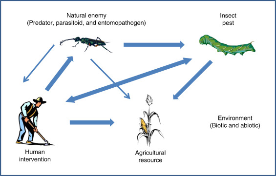

Organic Farming:
Organic farming is an agricultural approach that emphasizes the use of natural and sustainable methods to cultivate crops and raise livestock. It is a holistic system that promotes the health and well-being of the soil, plants, animals, and the environment as a whole. In contrast to conventional farming, which relies heavily on synthetic fertilizers, pesticides, and genetically modified organisms (GMOs), organic farming seeks to work in harmony with nature's processes.One of the key aspects of organic farming is the strict avoidance of synthetic pesticides and herbicides. Instead, organic farmers employ a range of natural methods to manage pests, diseases, and weeds. These methods include biological pest control, crop rotation, intercropping (growing different plants together), and the use of natural repellents and traps.
Types Of Organic Farming
Organic farming is divided into two types, namely:
1.Integrated organic farming
2.Pure organic farming
Integrated Organic Farming:-
Integrated organic farming is a cyclical, zero-waste procedure, where waste products from one process are cycled in as nutrients for other processes. This allows the maximum utilisation of resources and increases the efficiency of production.
Pure Organic Farming:-
Pure organic farming means avoiding all unnatural chemicals. In this process of farming, all the fertilisers and pesticides are obtained from natural sources such as bone meal or blood meal.
Basic Steps Involved In Orgainc Farming
Organic farming approach involves following five principles:
1.Conversion of land from conventional management to organic management
2.Management of the entire surrounding system to ensure biodiversity and sustainability of the system.
3.Crop production with the use of alternative sources of nutrients such as crop rotation, residue management, organic manures and biological inputs.
4.Management of weeds and pests by better management practices, physical and cultural means and by biological control system.
5.Maintenance of live stock in tandem with organic concept and make them an integral part of the entire system
Methods Of Orgainc Farming
Crop Rotation:-
Crop rotation is a farming technique where farmers do not cultivate the same crop on the same land every year; instead, they grow different crops in rotation to maintain the soil’s health.
Crop rotation is a very beneficial farming technique that replenishes the soil naturally as different plants contribute different nutrients to the soil. This technique helps control pests, weeds, insects, etc. by disrupting their habitat.
Green Manure:-
Green manuring can be defined as a practice of
ploughing or turning into the soil, undercomposed fresh
green plant tissue for the purpose of improving fertility
status, physical and biological condition of the soil.

Compost:-
Composting is the microbial process of degradation in which the plant and animal wastes are naturally degraded to produce organic manure.
Organic manure is used for enrichment of the soil that helps with the growth of plants.
In occurs in the presence of specific bacteria and fungi.
It is slow, simple, cheap and doesn't harm the environment.

Biological Pest Control:-
Biological control is the use of living organisms to suppress pest populations, making them less damaging than they would otherwise be. Natural enemies of insects play an important role in limiting the densities of potential pests. These natural enemies include predators, parasitoids, and pathogens.
Key Facts About Organic Farming In India
1.Sikkim became the first State in the world to become fully organic.
2.North East India has traditionally been organic, & the consumption of chemicals is far less than rest of the country.
3.Madhya Pradesh tops the list with 0.76 million ha of area under organic cultivation — that is over 27 per cent of India’s total organic cultivation area.
4.The top three states, Madhya Pradesh, Rajasthan, & Maharashtra — account for about half the area under organic cultivation.
5.Major organic exports from India are flax seeds, sesame, soybean, tea, medicinal plants, rice & pulses.
6.Major exporting states: Assam, Mizoram, Manipur, & Nagaland.